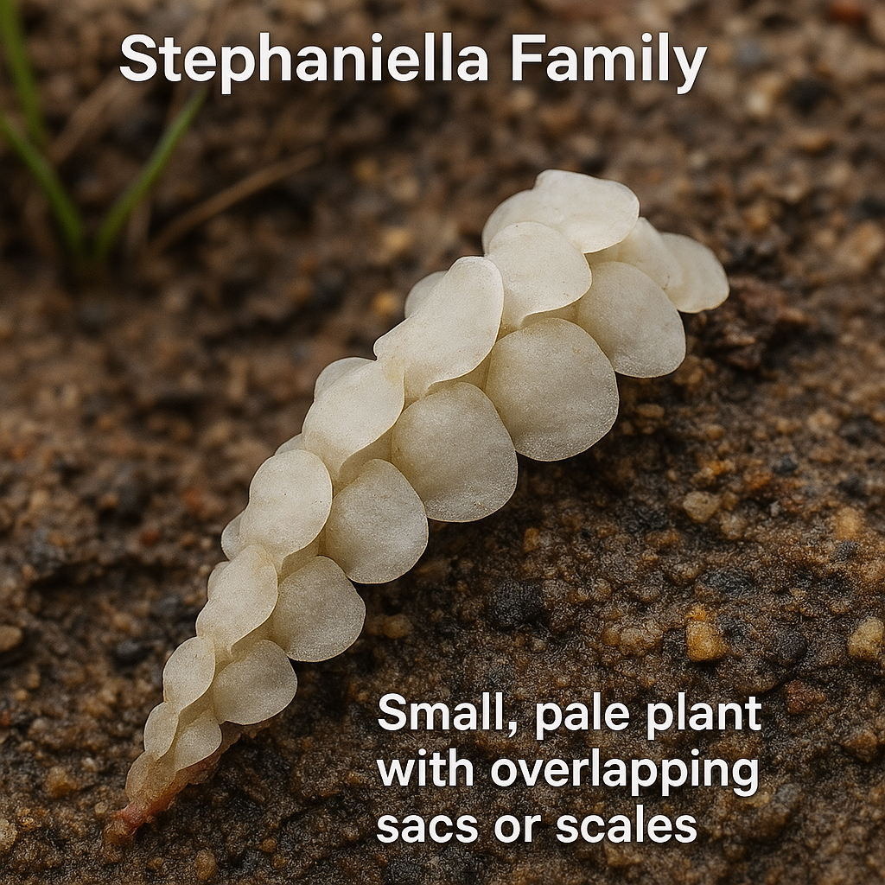

Stephaniellaceae
Stephaniella Family
Stephaniellaceae is a highly unusual and monotypic family of liverworts, containing only the genus Stephaniella. These small, pale plants exhibit an extremely modified structure, appearing as a series of overlapping sacs or scales rather than typical leafy shoots. They are specialized inhabitants of high-altitude páramo and puna ecosystems in the Andes.
Overview
The Stephaniellaceae family stands as one of the most morphologically bizarre groups among all liverworts. Comprising only the genus Stephaniella with 2-3 species, it represents an extreme adaptation to the harsh conditions of high-altitude Andean ecosystems (páramo and puna, typically above 3500m). These plants bear little resemblance to typical leafy liverworts, instead forming small, whitish, greyish, or pale brownish patches on bare soil, often nestled among grasses or cushion plants.
The plant body is composed of highly modified, overlapping leaves that form sac-like or scale-like structures along a creeping stem. Large ventral leaves are hood-like and form protective sacs, while dorsal leaves are reduced to small scales. This unique structure likely aids in water retention and protection against intense UV radiation and temperature fluctuations in their high-elevation habitat. Reproductive structures are also highly modified and borne internally within these sacs.
Due to its extreme morphological divergence, the phylogenetic position of Stephaniellaceae within the Jungermanniales is highly uncertain and debated. It represents a fascinating case study in evolutionary adaptation and morphological reduction/modification in response to extreme environmental pressures.
Quick Facts
- Scientific Name: Stephaniellaceae
- Common Name: Stephaniella Family
- Number of Genera: 1 (Stephaniella)
- Number of Species: 2-3
- Distribution: High Andes of South America (possibly southern Africa)
- Evolutionary Group: Liverworts (Marchantiophyta) - Jungermanniopsida - Jungermanniales (suborder uncertain)
- Key Feature: Highly modified sac-like structure, not typically leafy; internal sex organs.
- Habitat Specificity: High-altitude páramo/puna on soil.
Key Characteristics
Gametophyte Form and Habit
Plants are small, highly modified, not appearing typically leafy. They form creeping patches or occur as scattered individuals, often whitish, greyish, or pale brownish. The plant body consists of a stem covered by closely overlapping, complex, sac-like structures formed from modified leaves.
Leaves and Underleaves
Leaves are extremely modified and dimorphic, arranged in pairs along the stem. The ventral leaf of each pair is large, strongly concave or hood-like (cochleariform), forming an open sac or pouch directed towards the shoot apex. The dorsal leaf is much smaller, often scale-like or flap-like, situated near the base of the ventral leaf sac. The overlapping ventral sacs give the plant its characteristic appearance. Underleaves are completely absent.
Rhizoids
Rhizoids are usually sparse, colorless, arising from the ventral side of the stem.
Cellular Structure
Cells are typically large, thin-walled, and hyaline (clear and translucent), usually lacking trigones. Chloroplasts may be few or inconspicuous. Oil bodies are generally reported as absent.
Asexual Reproduction
Asexual reproduction via gemmae is absent.
Reproductive Structures
Plants are dioicous.
- Reproductive structures are highly reduced and borne internally within the ventral leaf sacs or on specialized, reduced branches within these sacs.
- Antheridia are small, located inside modified bracts (leaf sacs).
- Archegonia are also internal, surrounded by protective scales or bracts within the sacs.
- A perianth is absent. Protection for the developing sporophyte is provided by the modified leaves forming the sac and possibly a calyptra.
- Marsupia are absent.
Sporophytes and Spores
The sporophyte develops internally within the leaf sacs. It is small, with a short seta. The capsule is spherical, dark, with a wall composed of two layers of cells. Dehiscence occurs via four valves.
Field Identification
Identifying Stephaniellaceae requires recognizing its highly unusual, non-leafy appearance and its specific high-altitude habitat. It can easily be overlooked or mistaken for fungi, lichens, or soil crusts.
Primary Identification Features
- Appearance: Small, whitish, greyish, or pale brownish structures resembling overlapping scales or sacs, not typical leaves.
- Habit: Creeping patches or individuals on bare soil.
- Habitat: Restricted to high-altitude (páramo/puna) ecosystems, primarily in the Andes.
- Structure: Lacks the appearance of distinct stems with lateral leaves and underleaves.
Secondary Identification Features
- Texture: May appear somewhat fleshy or brittle.
- Cells (Microscopic): Large, thin-walled, hyaline.
- Reproductive Structures: Not externally visible.
Seasonal Identification Tips
Stephaniellaceae are perennial but may be most apparent during wetter periods in their high-altitude habitats:
- Growing Season: Look on bare soil patches within páramo or puna vegetation during periods of adequate moisture.
- Dry Conditions: Plants may become inconspicuous or resemble dry crusts.
Common Confusion Points
Its unique morphology makes confusion with other liverworts unlikely upon close inspection, but initial misidentification is possible:
- Lichens/Fungi/Soil Crusts: The pale, scale-like appearance might initially suggest non-bryophyte organisms. Careful observation reveals the cellular structure.
- Highly modified alpine Gymnomitriaceae: Some Gymnomitrion can be pale and compact, but they retain a structure based on appressed bilobed leaves, not sacs.
- Arnelliaceae (Arnellia): Also arctic-alpine but grows on calcareous substrates, has distinct (though entire) leaves, and lacks the sac-like structure.
Field Guide Quick Reference
Look For:
- Small, whitish/greyish/pale patches
- Appearance of overlapping scales or sacs
- Not typically leafy
- High-altitude Andean habitat (páramo/puna)
- Growing on bare soil
- Underleaves absent
Key Distinctions:
- Sac-like structure (vs. leafy structure in almost all others)
- Internal sex organs, no perianth
- Habitat highly specific
- Large, thin-walled cells (microscopic)
Notable Examples
The family is monotypic, containing only the genus Stephaniella:

Stephaniella paraphyllina
(No common name)
The most well-known species, found in high Andean páramo ecosystems. Exhibits the characteristic pale, scale-like or sac-like appearance, growing on bare soil. Represents the extreme morphological modification typical of the family.

Stephaniella rostrata
(No common name)
Another species described from the high Andes, differing from S. paraphyllina in subtle details of the sac structure or cellular features. Shares the same highly modified appearance and specialized habitat.
Phylogeny and Classification
Stephaniellaceae holds one of the most enigmatic and isolated phylogenetic positions among all leafy liverworts (Jungermanniopsida). Classified within the division Marchantiophyta, its placement within the order Jungermanniales is traditional but highly uncertain due to its extreme morphological divergence. Some molecular studies place it tentatively within the suborder Jungermanniineae, while others suggest it might warrant its own order, Stephaniellales, reflecting its profound uniqueness.
The highly modified gametophyte, with its sac-like structures formed from dimorphic leaves, internal sex organs, and lack of a perianth, represents an extreme evolutionary trajectory likely driven by adaptation to the harsh, high-altitude Andean environment. Understanding its true phylogenetic relationships requires further research but underscores the remarkable evolutionary plasticity within liverworts.
Position in Plant Phylogeny
- Kingdom: Plantae
- Clade: Embryophytes (Land Plants)
- Division: Marchantiophyta (Liverworts)
- Class: Jungermanniopsida
- Order: Jungermanniales (placement uncertain)
- Suborder: Jungermanniineae (tentative/uncertain)
- Family: Stephaniellaceae
Evolutionary Significance
Stephaniellaceae is highly significant for:
- Extreme Morphological Adaptation: A remarkable example of how plant form can be drastically modified in response to extreme environmental pressures (high UV, desiccation, temperature fluctuation).
- Phylogenetic Enigma: Represents a major puzzle in liverwort evolution, highlighting lineages that have diverged significantly from typical leafy forms.
- Andean Biodiversity Hotspot: A unique component of the specialized flora of high-altitude Andean ecosystems.
- Evolutionary Plasticity: Demonstrates the potential for radical changes in body plan within the liverworts.